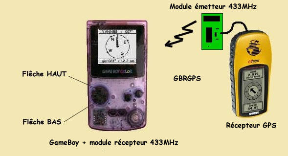

Présentation du Système
Affichage d'informations GPS sur une GameBoy par liaison radio.
Principe général
Le GameBoy Repeater for Global Positional System (GBRGPS) affiche sur une GameBoy des informations GPS transmises par liaison radio. Ces informations, provenant d'un GPS, sont extraites d'une chaîne de caractères au format NMEA183 V.2. La transmission est réalisée à la fréquence normalisée de 433.92 MHz.

Le cœur du système est un PIC16F84 qui utilise une GameBoy couleur pour périphérique. Elle a en charge la mise en forme et l'affichage des informations. Le GBRGPS reçoit ses données d'un module récepteur intégré à la GameBoy à l'aide d'un module Aurel 433MHz.
La trame NMEA183
La norme NMEA183 définit les caractéristiques électriques et le format des données transmises par des instruments. Le projet n'utilise que deux types d'informations essentiels : GPRMC et GPRMB (Recommended Minimum Navigation Information).
Exemple de trame :
$GPRMC,133756,A,4755.2122,N,00231.1871,E,5.6,213.6,040801,1.4,W,A*06
Les Menus sur GameBoy
Trois menus sont disponibles et commandés par les flèches HAUT et BAS de la GameBoy :
- Menu 1 : Cap du mobile - Gisement, distance du point à atteindre et indication d'arrivée.
- Menu 2 : Latitude, Longitude, cap et vitesse en nœuds (kt) du mobile.
- Menu 3 : Gisement Magnétique et distance du Point à atteindre (WAYPOINT) - ROUTE du mobile.